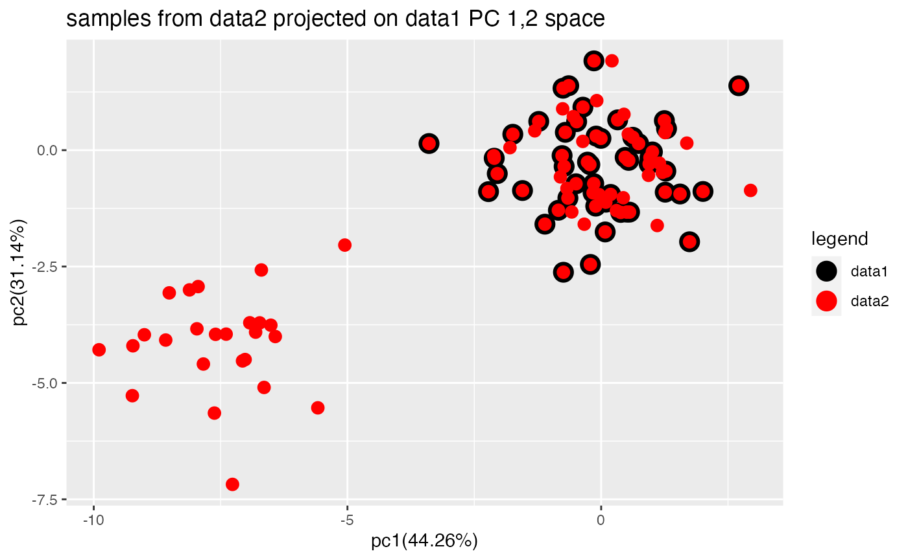
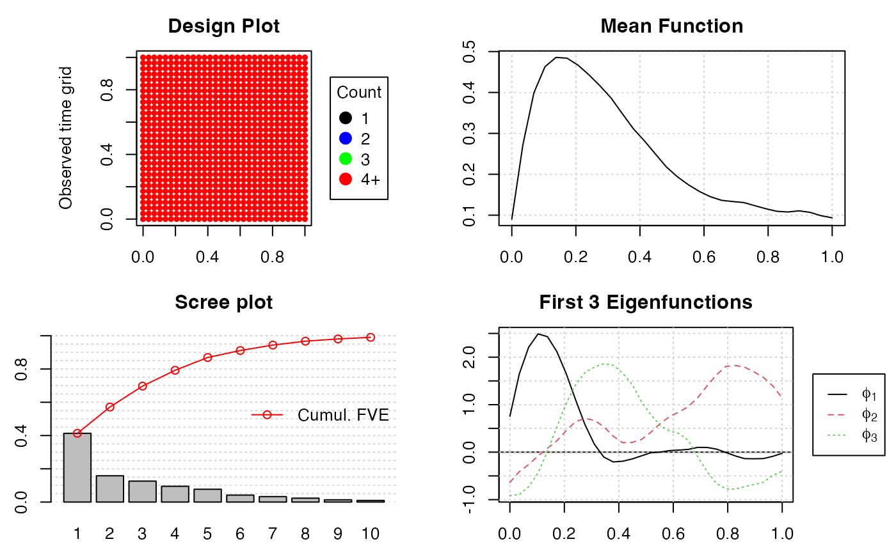
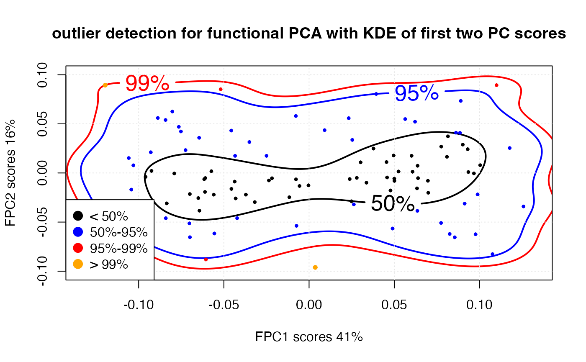
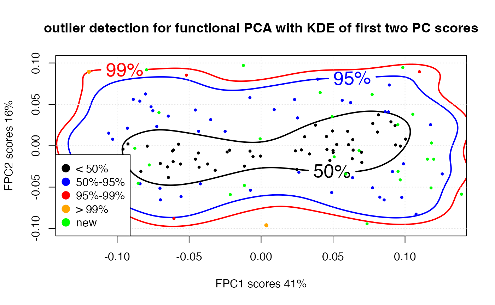

multivaraite.RmdFor each variables in corresponding datasets, we could treat them as
independent variables or we could view them as correlated variables
where they are generated under some multivariate distribution. The
get_varialbe_multi_stat is designed for obtaining custom
difference metrics on these variables.
First, we need to load the package and generate the simulated datasets :
library(ddiff)
d <- generate_test_data(50)For continuous variables, the default metric is set to be the variance-covariance matrix for multivariate case. The default metric for categorical and binary variables are contingency table and confusion matrix.
#Multivariate information diff
ddiff_rpt <- get_variable_multi_stat(d$records_added$old, d$records_added$new,"id")
ddiff_rpt
#> $result_con
#> $result_con$cov
#> $result_con$cov[[1]]
#> nm_1 nm_2 nm_3
#> nm_1 1.04662767 0.29763593 0.04029941
#> nm_2 0.29763593 1.05999609 0.04030248
#> nm_3 0.04029941 0.04030248 0.96438759
#>
#> $result_con$cov[[2]]
#> nm_1 nm_2 nm_3
#> nm_1 1.04662767 0.29763593 0.04029941
#> nm_2 0.29763593 1.05999609 0.04030248
#> nm_3 0.04029941 0.04030248 0.96438759For lower dimensional data, we could compare the variance-covariance directly while for high dimensional data, this approach would be computationally expensive. One possible way around is that, we could apply dimension reduction methods on this case. For example, we could look at the difference by projecting the data into two dimension plane and compare them directly.
pca_multi_stat(d$records_added$old, d$records_added$new,"id", ddiff_rpt)
This is a brief introduction to the package
fdapace (Gajardo et al.
2021). The basic work-flow behind the PACE approach for sparse
functional data is as follows (see e.g. (Yao,
Müller, and Wang 2005; Liu and Müller 2009) for more
information):
As a working assumption a dataset is treated as sparse if it has on
average less than 20, potentially irregularly sampled, measurements per
subject. A user can manually change the automatically determined
dataType if that is necessary. For densely
observed functional data simplified procedures are available to obtain
the eigencomponents and associated functional principal components
scores (see eg. (Castro, Lawton, and Sylvestre
1986) for more information). In particular in this case we:
In the case of sparse FPCA the most computational intensive part is the smoothing of the sample’s raw covariance function. For this, we employ a local weighted bilinear smoother.
We use the longitudinal dataset that this available with ddiff to showcase FPCA and its related functionality. The dataset containing […]. The data are rather noisy, dense and with a characteristic flat start. For that reason in contrast with above we will use a smoothing estimating procedure despite having dense data.
fdata <- generate_test_functional_data()
#>
#> Attaching package: 'dplyr'
#> The following objects are masked from 'package:stats':
#>
#> filter, lag
#> The following objects are masked from 'package:base':
#>
#> intersect, setdiff, setequal, union
#> Joining, by = "subjid"
#> Joining, by = c("t_obs", "grps")
#> Joining, by = c("t_obs", "subjid")
#> Joining, by = "subjid"
Flies <- fdapace::MakeFPCAInputs(IDs = fdata$subjid, tVec = fdata$t_obs_n, yVec = fdata$y)
fpcaObjFlies <- fdapace::FPCA(Flies$Ly, Flies$Lt, list(methodMuCovEst = 'smooth', dataType='Dense', error = FALSE))Based on the scree-plot we see that the first three components appear to encapsulate most of the relevant variation. The number of eigencomponents to reach a 99.99% FVE is 11 but just 6 eigencomponents are enough to reach a 95.0%. # FPCA in R using fdapace
 # outlier detection One can perform outlier detection (Febrero, Galeano, and González-Manteiga 2007). Different ranking methodologies (KDE, bagplot Hyndman and Shang (2010) or point-wise) are available and can potentially identify different aspects of a sample. For example here it is notable that the kernel density estimator KDE variant identifies two main clusters within the main body of sample.
fObj <- fpcaObjFlies
fScores1 <- fObj$xiEst[, 1]
fScores2 <- fObj$xiEst[, 2]
fScoresAll <- cbind(fScores1, fScores2)
fhat <- ks::kde(x = fScoresAll, gridsize = c(400, 400), compute.cont = TRUE)
zin = fhat$estimate
quickNNeval <- function(xin,yin, zin, xout, yout){
xIndices = sapply( xout, function(myArg) which.min( abs( xin - myArg) ), simplify = TRUE)
yIndices = sapply( yout, function(myArg) which.min( abs( yin - myArg) ), simplify = TRUE)
return( zin[ cbind(xIndices,yIndices)] )
}
qq = quickNNeval(xin = fhat$eval.points[[1]], yin = fhat$eval.points[[2]], zin = zin, xout = fScores1, yout = fScores2)
xedge = 1.05 * max(abs(fScores1))
yedge = 1.05 * max(abs(fScores2))
args2 = list(x = fhat$eval.points[[1]], y = fhat$eval.points[[2]],
z = zin, labcex = 1.66, col = c("black", "blue","red"), levels = fhat$cont[c(50, 95, 99)],
labels = c("50%", "95%", "99%"))
args1 <- list(pch = 10, xlab = paste("FPC", 1,
" scores ", round(100 * fObj$cumFVE[1]),
"%", sep = ""), ylab = paste("FPC", 2,
" scores ", round(diff(100 * fObj$cumFVE[c(2 -
1, 2)])), "%", sep = ""), xlim = c(-xedge, xedge), ylim = c(-yedge, yedge), lwd = 2)
do.call(graphics::contour, c(args2, args1))
grid(col = "#e6e6e6")
points(fScoresAll[qq <= fhat$cont[99], ], cex = 0.5,
col = "orange", pch = 10, lwd = 2)
points(fScoresAll[qq > fhat$cont[99] & qq <= fhat$cont[95],
], cex = 0.33, col = "red", pch = 10, lwd = 2)
points(fScoresAll[qq > fhat$cont[95] & qq <= fhat$cont[50],
], cex = 0.33, col = "blue", pch = 10, lwd = 2)
points(fScoresAll[qq >= fhat$cont[50], ], cex = 0.33,
col = "black", pch = 10, lwd = 2)
legend("bottomleft", c("< 50%", "50%-95%", "95%-99%",
"> 99%"), pch = 19, col = c("black", "blue",
"red", "orange"), pt.cex = 1.5, bg = "white")
title(main = "outlier detection for functional PCA with KDE of first two PC scores") # diff version
We could also project the new data into the old space of scores.
fdata_new <- fdata[sample(1:1000),]
fdata_new <- fdata_new %>% arrange(t_obs_n)
Flies <- fdapace::MakeFPCAInputs(IDs = fdata_new$subjid, tVec = fdata_new$t_obs_n, yVec = fdata_new$y)
length(unique(fdata_new$subjid))
#> [1] 34
pred <- predict(fObj, Flies$Ly, Flies$Lt, K=2)
pred$scores
#> [,1] [,2]
#> [1,] 0.0493797727 0.035168054
#> [2,] 0.0930988163 0.125884916
#> [3,] -0.0213835490 -0.059027957
#> [4,] 0.1199629031 -0.016290789
#> [5,] 0.1823003310 0.047749972
#> [6,] 0.0588917496 -0.034148228
#> [7,] 0.0771769301 0.061905468
#> [8,] 0.1392378263 -0.058657923
#> [9,] 0.1180711993 -0.051044528
#> [10,] 0.0410797038 0.064200020
#> [11,] 0.0984147233 0.094471317
#> [12,] 0.1183115839 0.003282770
#> [13,] 0.0966311106 -0.041273621
#> [14,] 0.2715177210 -0.041705469
#> [15,] -0.1015175369 -0.077080397
#> [16,] -0.0853718145 -0.045373684
#> [17,] -0.0122672219 0.097022533
#> [18,] 0.1155002668 -0.016202099
#> [19,] 0.0951737191 -0.030976947
#> [20,] 0.1734187958 0.146412993
#> [21,] 0.1054328399 0.038100187
#> [22,] -0.1773920693 -0.062505420
#> [23,] -0.0006628421 0.008300973
#> [24,] -0.0795657516 0.091809123
#> [25,] -0.0876972128 -0.003037348
#> [26,] -0.0777461055 -0.023241664
#> [27,] 0.0736162912 -0.094438669
#> [28,] -0.0115613055 -0.048022006
#> [29,] -0.0709383218 0.039949839
#> [30,] 0.0949923391 0.025310444
#> [31,] -0.0652135809 -0.167272438
#> [32,] 0.0102627031 0.142780216
#> [33,] 0.0507613394 -0.013452993
#> [34,] 0.0681019034 -0.005905464
do.call(graphics::contour, c(args2, args1))
grid(col = "#e6e6e6")
points(fScoresAll[qq <= fhat$cont[99], ], cex = 0.5,
col = "orange", pch = 10, lwd = 2)
points(fScoresAll[qq > fhat$cont[99] & qq <= fhat$cont[95],
], cex = 0.33, col = "red", pch = 10, lwd = 2)
points(fScoresAll[qq > fhat$cont[95] & qq <= fhat$cont[50],
], cex = 0.33, col = "blue", pch = 10, lwd = 2)
points(fScoresAll[qq >= fhat$cont[50], ], cex = 0.33,
col = "black", pch = 10, lwd = 2)
points(pred$scores, cex = 0.33, col = "green", pch = 10, lwd = 2)
legend("bottomleft", c("< 50%", "50%-95%", "95%-99%",
"> 99%", "new"), pch = 19, col = c("black", "blue",
"red", "orange","green"), pt.cex = 1.5, bg = "white")
title(main = "outlier detection for functional PCA with KDE of first two PC scores")